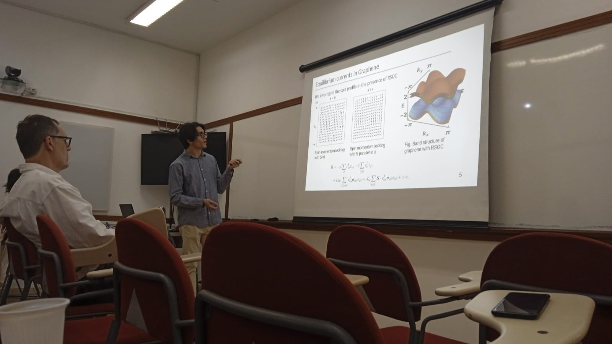

Finishing my PhD
I just finished the doctorate program at PUC-Rio and now am Ph.D in Physics. It was a long way to get here: moving out, COVID, five papers. Looking back and thinking about it and how I got through that, but somehow we all did.
The last few years were very tough, very challenging and (believe me) very rewarding. There is no better feeling than getting all the weight out of your shoulders, get your all the hard work you put in it validated by people that you respect a lot.
Somehow how it all worked out, the presentation went way better than expected (and my advisor agree with me), and I could convince the committee that I am worth the diploma.
It doesn't get necessarily easier from now on. I will soon go to Shanghai for a postdoc, a completely new adventure waits for me. As a postdoc, I will be able to work on very interesting physics and I look forward to that. I also want to mentor young students and I hope I have the opportunity to do it.
If you are interested in my presentation and my presentation you can get the slides here. Unfortunately the presentation was not recorded, but you can get an idea of the content of my research.